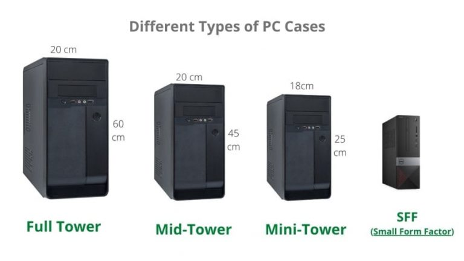
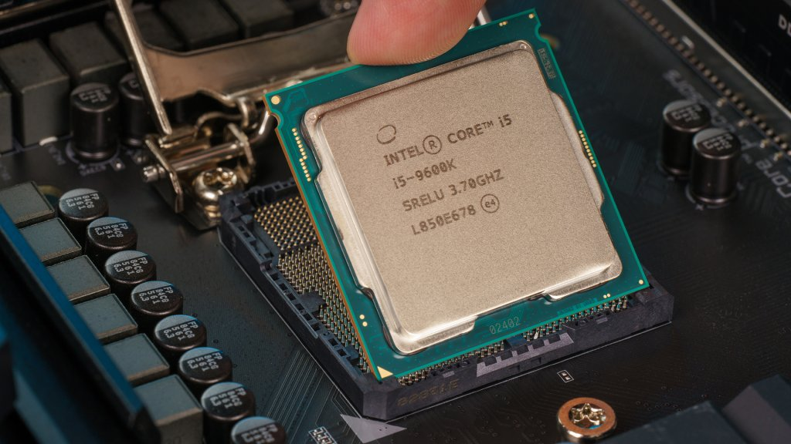
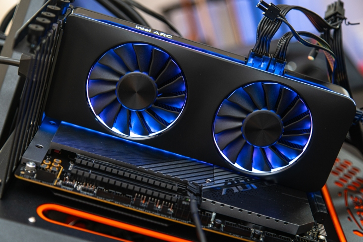
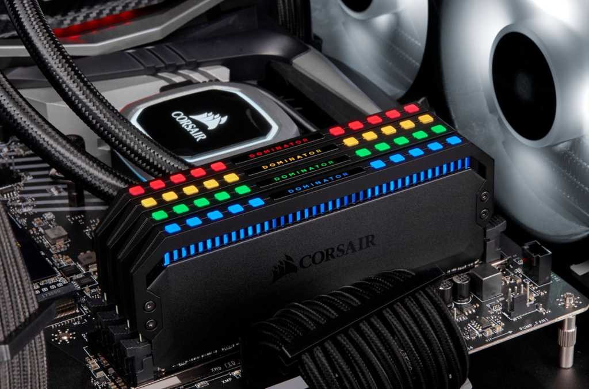
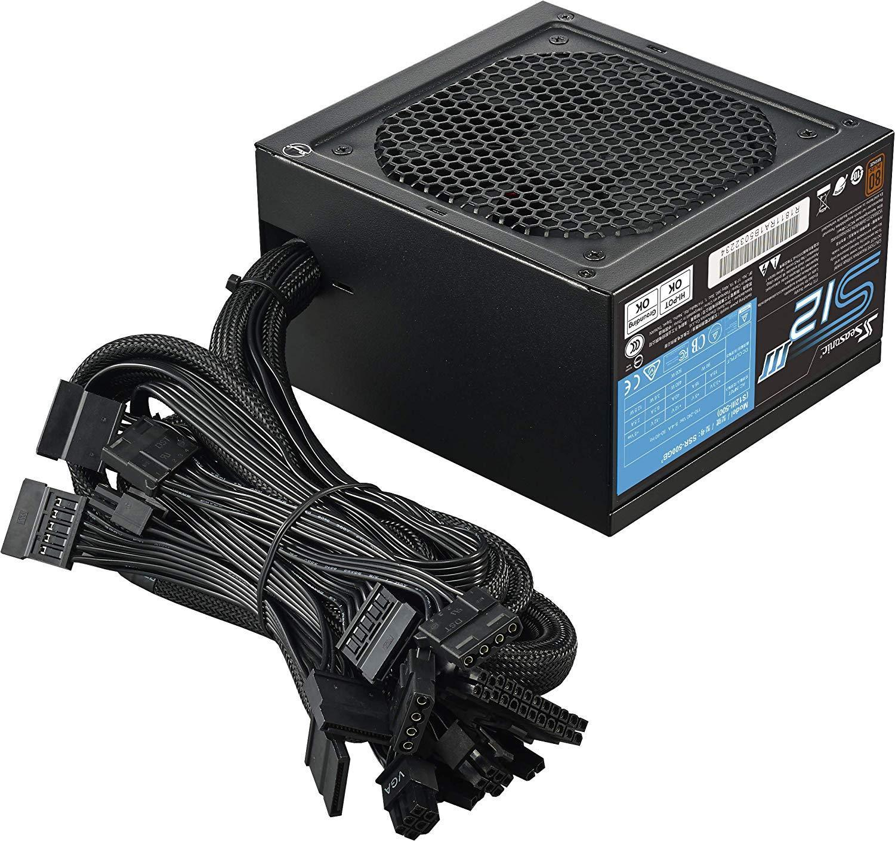

PC Case
The PC case, or tower, is what will hold all of your components. There are a couple of standard sizes to choose from and while that choice does come down to preference, bear in mind that a smaller case could potentially require specifically sized components. For beginners, it is recommended to choose a full-sized case, as the limitations on parts will be minimal.
Motherboard
The motherboard can be considered the heart of the PC. It accepts input from all other components within the computer and controls how they run and operate. Luckily, motherboards are fairly streamlined, in that picking one usually comes down to aesthetic preference and the right size for your case.

Central Processing Unit (CPU)
The CPU handles all of the main functions of the computer. They are capable of handling a large variety of tasks, but rarely do so with any notable speed. A robust CPU can be vital to certain niche applications, but otherwise the selection of CPU will be fairly straightforward and easy to determine.
Graphics Processing Unit (GPU)
The GPU is what handles very specific functions in a computer and have become synonymous with video games in the modern era. If the CPU can handle a large variety of tasks with moderate ease, the GPU can easily handle tasks one at a time. They are more specialized. If your PC is not intended for game use, however, their importance diminishes greatly.
Random-Access Memory (RAM)
Random-Access Memory serves as a filter between the data that the CPU handles and the data that the hard drive sends to the CPU. In a sense, it is temporary storage. Specifically, however, RAM ensures that the data it receives is able to read and written from very quickly. In most modern computers, there is a minimum recommended amount of RAM, with more growing important equal to the importance of intensive hardware such as high-end videogames.
Storage
Storage in computers comes in two forms: hard disk drive (HDD) & solid-state drive (SSD). HDDs are typically large-form storage devices, capable of carrying potentially terabytes of files, while SSDs are smaller, but capable of running its programs far faster. For example, it is common practice to store photos and text files in a HDD and a users operating system in the SSD, so that the computer will boot up quickly. Importance of storage space and speed is entirely user-dependant.
Power Supply Unit (PSU)
The PSU, as its name suggests, is what provides power for the entire PC. They come with ratings that vary between bronze and gold, but is purely an efficiency rating and will rarely amount to an substantial difference. Given the importance of the PSU, however, it is highly recommended that the user commit heavy research to ensure they are purchasing a well-functioning brand/unit.
Cooling Systems
Given the number of components within a PC tower, keeping those components cool is an important aspect of building a computer. There are a number of varying options, such as pumping cool water into various components, but the simplest solution and one that is recommended to beginners is a cooling fan to mount atop the CPU. As for the rest of the PC, a number of smaller fans can and should be outfitted at the front, back, and ceiling of the case, oriented in such a way that cold air gets sucked in and hot air gets pushed out.